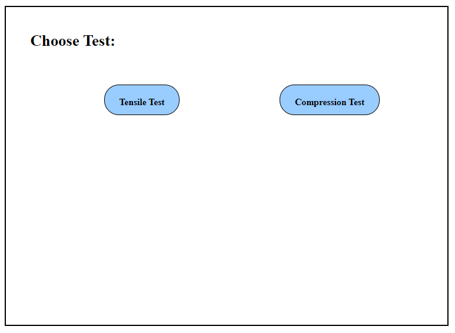
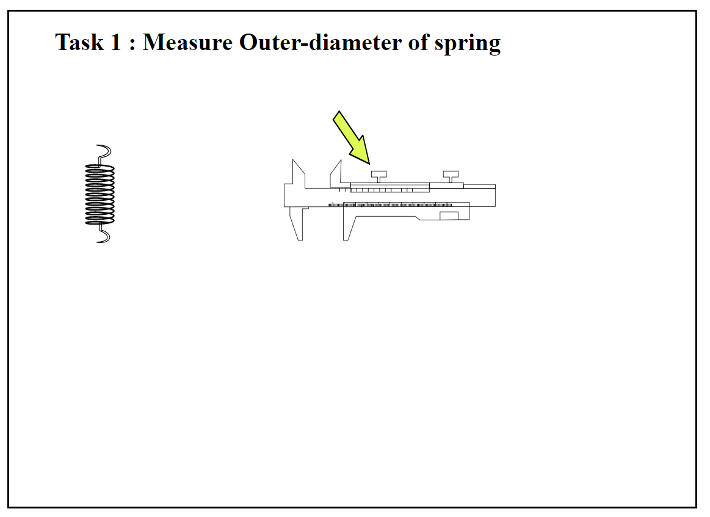
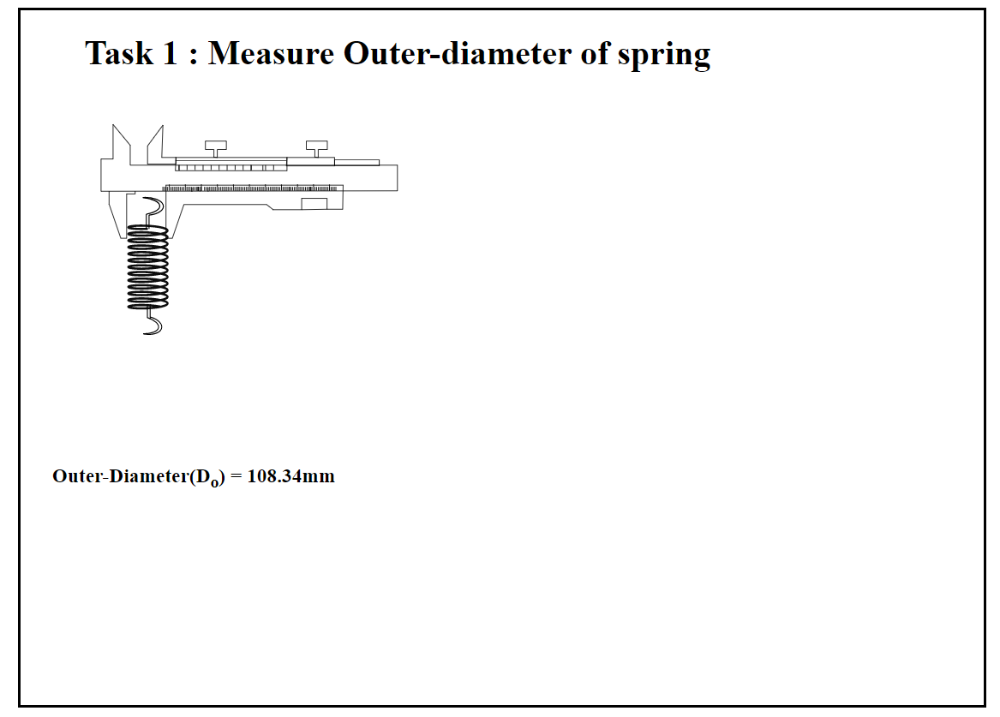
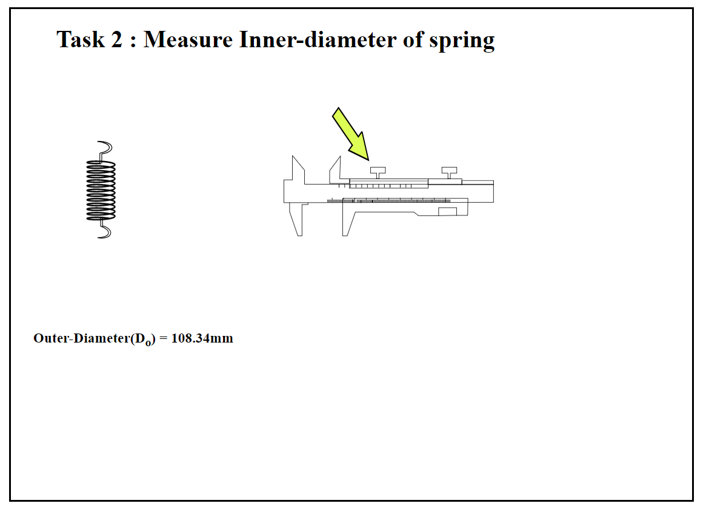
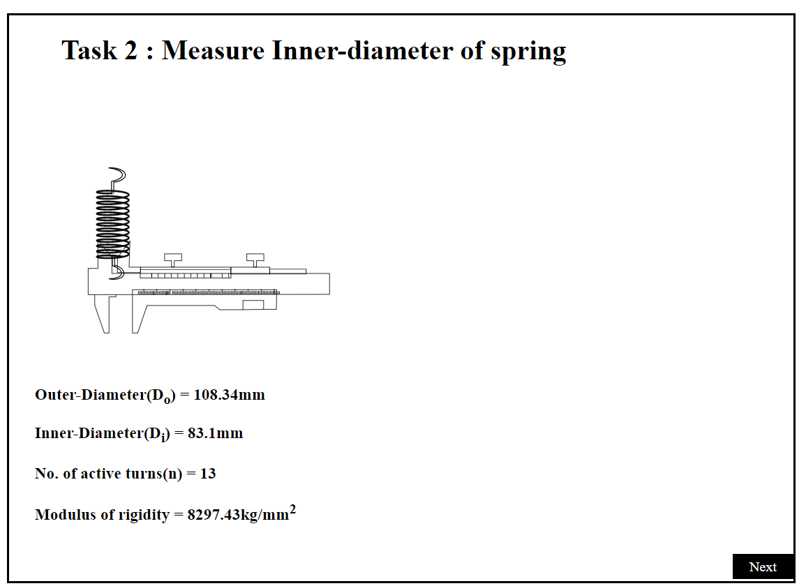
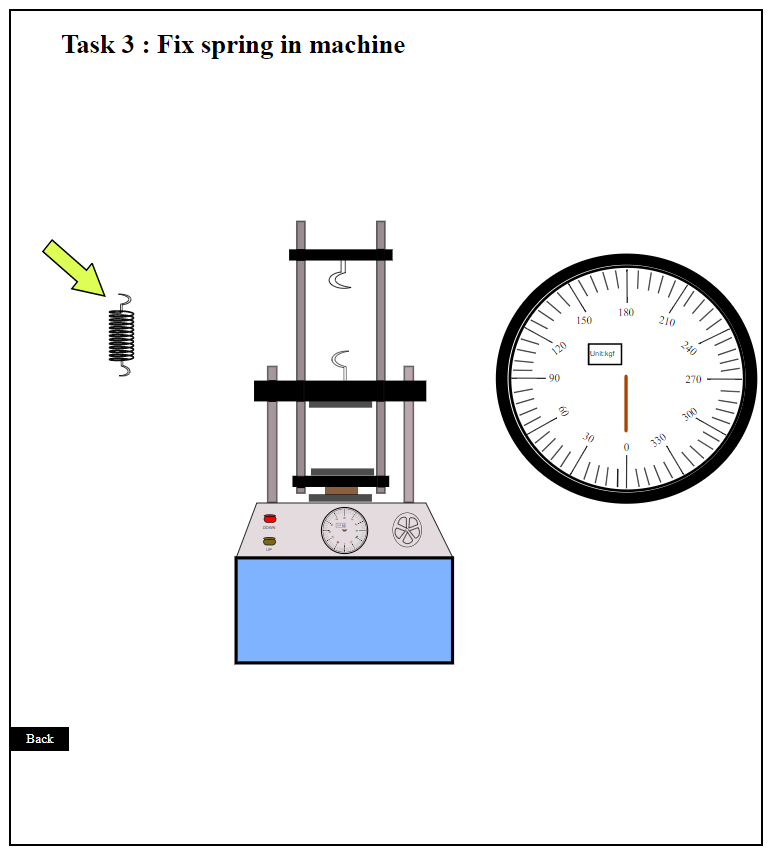
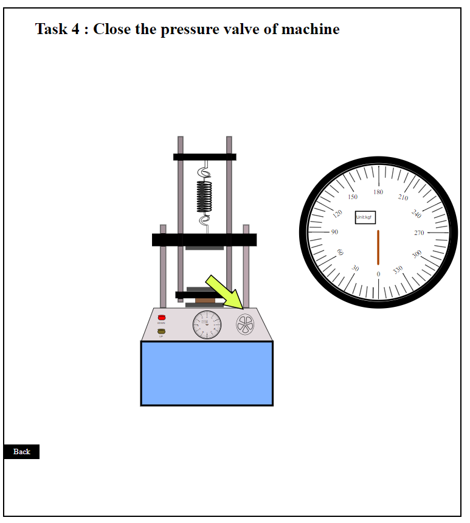
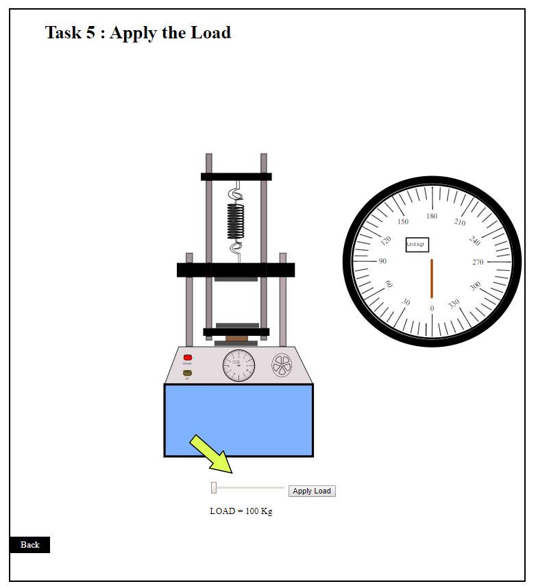
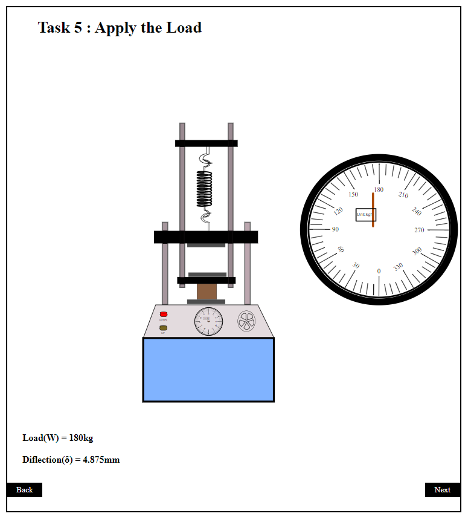
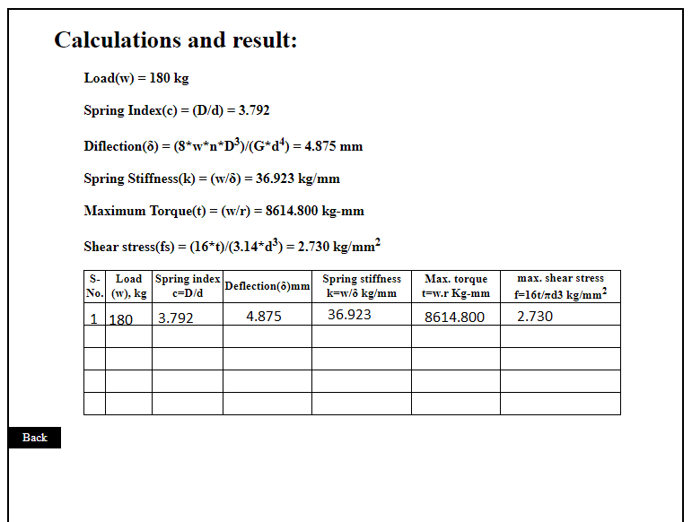

Strength-of-Materials Lab
Strength-of-Materials Lab
>
Universal Spring Testing Machine
Universal Spring Testing Machine


PROCEDURE
SIMULATION PROCEDURE
-
STEP 1: Simulation starts with choosing the test which is tension or compression test.
 -
STEP 2: Measure the Outer-Diameter of the spring by the help of vernier calliper.
  -
STEP 3: Measure the Inner-Diameter of the spring by the help of vernier calliper.
  -
STEP 4: Fix the spring in the spring testing machine
 -
STEP 5: Rotate the pressure valve of the spring testing machine
 -
STEP 6:Apply the load on the spring testing machine.
 -
STEP 7: Apply the load on the spring testing machine to observe the deflection. The dial shows the applied load.
 -
STEP 8: Calculation and results.

OBSERVATION TABLE
- For compression string:-
- Diameter of compression spring wire(d)=
- Mean coil diameter of string (D) =
- Actual no. of turns of spring (n) =
- Active no. of turns of spring (n’) = (n-1)
- Initial load (w) =
- Initial deflection (δ) =
S-No. Load (w), kg Spring index c=D/d Deflection(δ)mm Spring stiffness k=w/δ kg/mm Max. torque t=w.r Kg-mm max. shear stress f=16t/πd3 kg/mm2
- For tension spring:-
- Mean coil diameter of string (D) =
- Diameter of tension spring wire(d)=
- Actual no. of turns of spring (n) =
- Active no. of turns of spring (n’) = (nact)
S-No. Load (w), kg Spring index c=D/d Deflection(δ)mm Spring stiffness k=w/δ kg/mm Max. torque t=w.r Kg-mm max. shear stress f=16t/πd3 kg/mm2
CALCULATION
For tension spring:
Di =
Do =
D= (Do+Di)/2
D= Do-Di
- Spring index (c): -
c=D/d; - Spring stiffness(k):
k=w/δ (kg/mm) - mod. Of rigidity (G): -
For Helical steel spring (G) = 8297.43(kg/mm2) - Deflection (δ) :--
δ=8wD3n/Gd4 mm - Max. torque (t): -
t= w.r kg-mm - Max. shear stress (Fs)
Fs= 16.t/πd3 kg/mm2
For compression spring:
Di =
Do =
D= (Do+Di)/2
D= Do-Di
- Spring index (c): -
c=D/d; - Spring stiffness(k):
k=w/δ (kg/mm) - mod. Of rigidity (G): -
For Helical steel spring (G) = 8297.43(kg/mm2) - Deflection (δ) :--
δ=8wD3n'/Gd4 mm - Max. torque (t): -
t= w.r kg-mm - Max. shear stress (Fs)
Fs= 16.t/πd3 kg/mm2
RESULT
Note down the value of f, G and k for compression and tension spring.
- For Compression Spring :
- Spring index (c) = __________
- Spring stiffness (k) = _______kg/mm
- Mod. Of rigidity (G) = 8297.43 kg/mm2
- Max torque (t) = ________kg-mm
- Deflection (δ) = ________mm
- Max. shear stress (Fs) = _________kg/mm2
- For tension Spring:
- Spring index (c) = __________
- Spring stiffness (k) = _______kg/mm
- Mod. Of rigidity (G) = 8297.43 kg/mm2
- Max torque (t) = ________kg-mm
- Deflection (δ) = ________mm
- Max. shear stress (Fs) = _________kg/mm2
PREACAUTION
- Keep the machine protected from dust and dirt.
- Do not overload equipment.
- Level the test machine before starting using levelling screw.
- Use machine manually in case of power failure and avoid use of electric operation of case of low or high voltage for safety of electric motor and other electric gadgets.